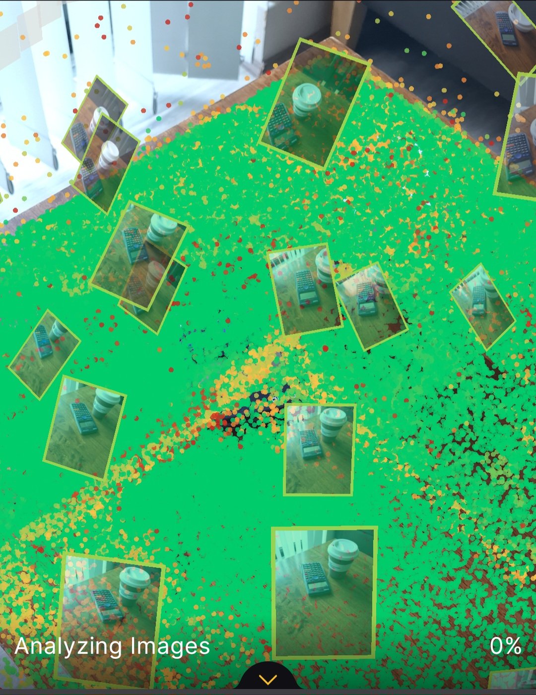
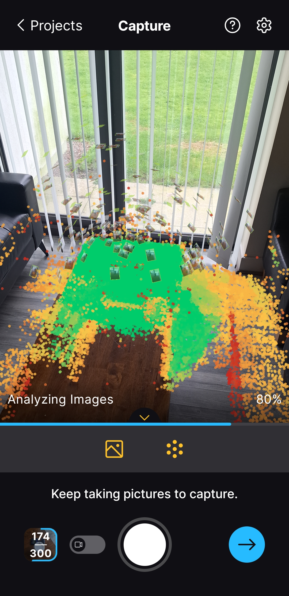
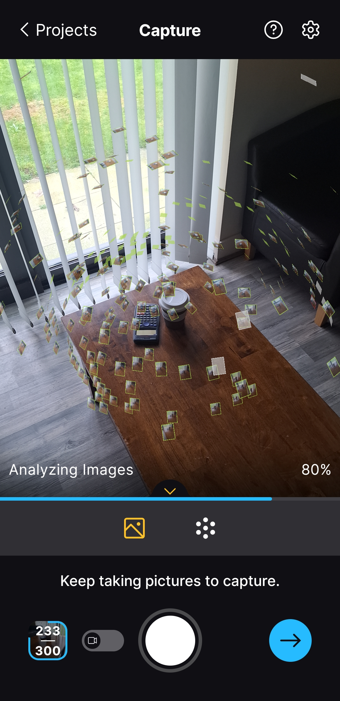
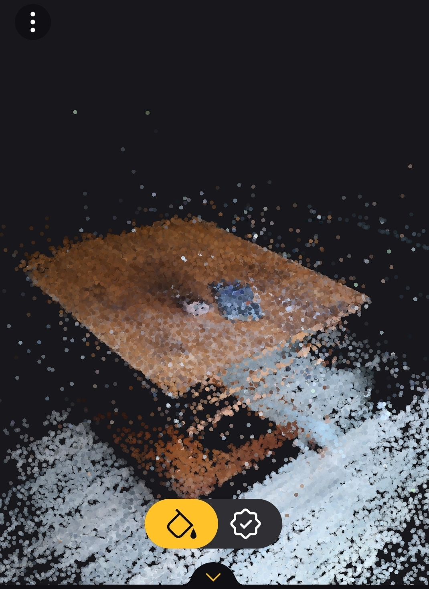

Experiment with Photogrammetry
This is the calculator and coffee cup that I used RealityScan to make it digitally. It is decent quality especially because it is taken on a phone (sending off lower quality images for faster processing as well). I took 233 pictures to create the scene.
Images of the process



